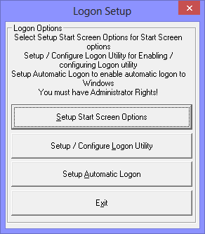

| My-T-Soft®: for Windows; Indestructible Keyboards and Indispensable Utilities; Version 1.80; User's Guide | ||
|---|---|---|
| Prev | Next | |

When configuring the My-T-Soft Logon Utilities, there are 3 options available (listed based on common usage):
Setup Start Screen Options
Setup / Configure Logon Utility
Setup Automatic Logon
Setup Start Screen Options provides ways to start My-T-Soft in conjunction with the Windows Start Screen (Windows 8 Start Menu) - options available include the capability of bypassing the Start Screen and going direct to the Desktop, starting minimized, and opening without the normal splash screen.
Setup / Configure Logon Utility enables options prior to running My-T-Soft after the user has logged onto the system. There are various security options that can affect the way the system is used, and this allows the keyboard to be available at secured screens, along with a way to generate a Ctrl-Alt-Delete option when a system is secured with this requirement.
Setup Automatic Logon is an option to allow modification to the built-in Windows option that allows Automatic logon - this is a convenience tool for System Administrators.